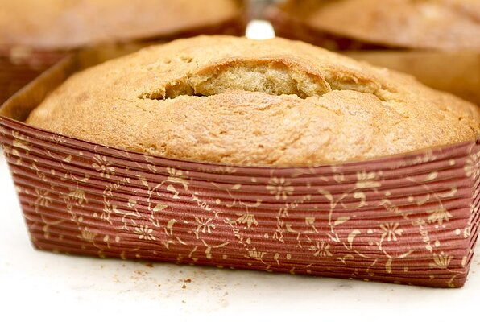

Easy Banana Bread

Hmmmm, hmmmm... this is what it's suppossed to look like
An easy peasy banana bread recipe. Get your bananas extra ripe, mash, mix and bake!
Ingredients
- 5 extra ripe bananas
- 4 eggs
- 1 cup shortening
- 2 1/2 cups white sugar
- 1 tablespoon vanilla extract
- 3 1/2 cups all-purpose flour
- 2 teaspoons baking soda
- 1 teaspoon salt
Steps
- Preheat oven to 300 degrees F
- Grease two 9x5 inch loaf pans
- Mash ripened bananas in a medium bowl
- Stir in the eggs and blend well
- In separate large sized bowl, beat shortening and little by little add sugar
- Stir in vanilla
- Pour the banana mixture from medium bowl into the large bowl and stir
- In a third bowl, whisk flour, baking soda and salt
- Blend the third bowl flour mixture into the large bowl
- Add walnuts (optional - or use chocolate chips!)
- Pour mixture evenly into the two greased loaf pans
- Put in oven for 1 hour and 20 minutes
- Finished when a toothpick inserted into the center of the loaf comes out clean